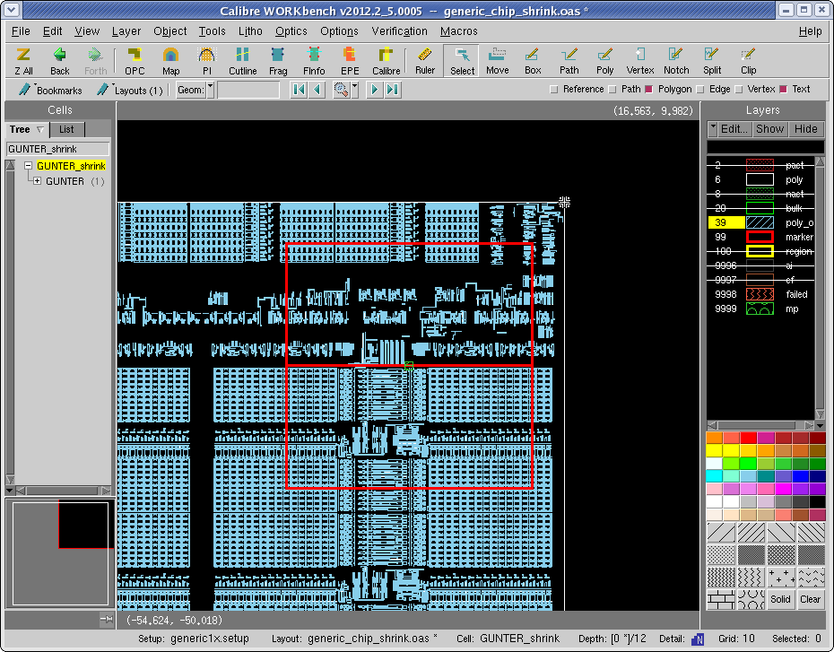

You can specify
the marker extent for the SEM measurement method. The markers are
used to align the SEM pattern recognition region.
Prerequisites
Before starting this procedure,
you should have the following:
Procedure
- In the Calibre WORKbench viewer,
add markers at the desired locations for SEM alignment (see Figure 1).
Figure 1. SEM Alignment Markers
- Set the parameters for SEM
Alignment in the New Marker or Edit Marker window (see Figure 2):
- Click OK to input the changes. The
new SEM_align marker is added to the end of the list in the Sites
table. After generating CMi output, the alignment locations are
included in the AMAT or Hitachi output file.